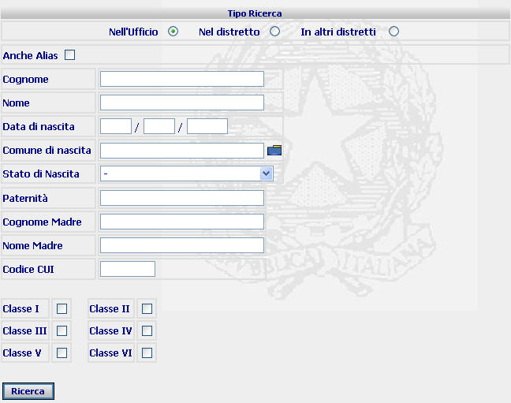
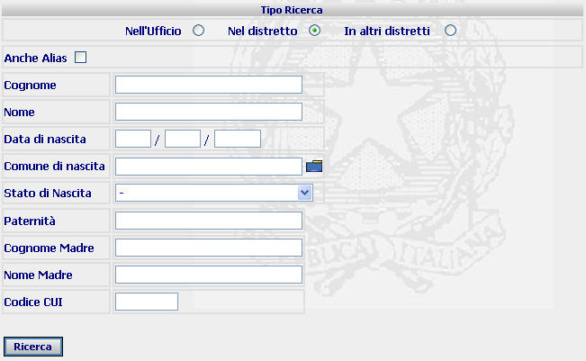
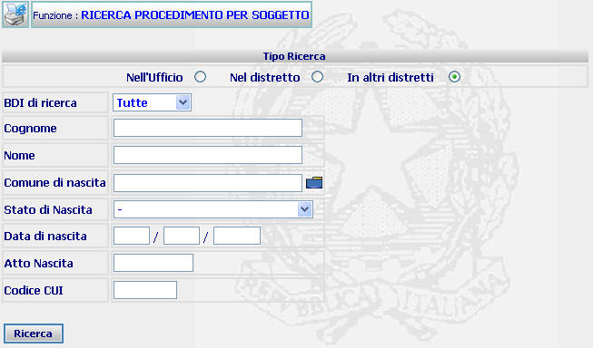
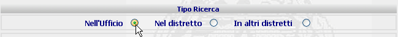
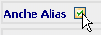
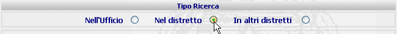
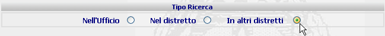
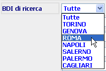

RICERCA PROCEDIMENTO PER SOGGETTO: La funzione consente di operare ricerche di procedimenti negli Uffici Esecuzione di Procura o di Procura Generale, del Distretto di appartenenza, a carico di un soggetto attraverso l'indicazione dei dati anagrafici dello stesso.
LE MASCHERE VIDEO
La funzione viene realizzata attraverso la maschera seguente in cui viene richiesto di compilare, integralmente o in maniera parziale, uno o più campi presenti nella maschera
Sono possibili tre tipologie di ricerche per soggetto associate ciascuna ad una determinata maschera:
Nell'ufficio:



COME FARE PER ...
| Per ricercare il/i procedimenti iscritti nel proprio ufficio a carico di un soggetto l'utente deve: |
Selezionare, la voce

- Specificare se la ricerca deve essere effettuata anche sugli Alias:

- Introdurre nei relativi campi (non necessariamente in tutti) il dato richiesto o una parte dello stesso (ad esempio le prime lettere del cognome o del nome);
Opzionalmente selezionare la classe del procedimento al fine di filtrare per Classe la ricerca;
- Confermare i dati inseriti nella maschera agendo sul bottone
. Se esiste uno o più procedimenti a carico del soggetto (o dei soggetti) individuato con i campi compilati, allora viene visualizzata la maschera di dettaglio procedimento SIEP (se il risultato è un unico procedimento) ovvero la maschera di lista procedimento per numero SIEP.
| Per estendere la ricerca anche ai procedimenti iscritti in altri uffici del distretto, l'utente deve: |
Effettuare la ricerca con le modalità descritte ai punti 3 e 4 precedenti, selezionando però la voce

- Confermare i dati inseriti nella maschera agendo sul bottone
| Per effettuare la ricerca ai procedimenti iscritti in altri distretti l'utente deve: |
Selezionare la voce come nel immagine seguente:

- Selezione il distretto su cui effettuare la ricerca :

- Introdurre nei relativi campi (non necessariamente in tutti) il dato richiesto o una parte dello stesso (ad esempio le prime lettere del cognome o del nome).
- Confermare i dati inseriti nella maschera agendo sul bottone
CAMPI
I dati attraverso i quali è possibile effettuare la ricerca sono i seguenti:
| Cognome | Campo nel quale va inserito il cognome (o una parte del cognome) del soggetto da ricercare |
| Nome | Campo nel quale va inserito il nome (o una parte del nome) del soggetto da ricercare |
| Comune di nascita |
Campo nel quale va inserito il Comune di nascita (digitandolo per intero
o selezionandolo attraverso l'apposito
Pulsante di Ricerca da Lista Predefinita |
| Stato nascita | Campo nel quale va inserito lo Stato di nascita (da selezionare attraverso la relativa tendina) |
| Data di nascita | Campo nel quale va inserita la data di nascita del soggetto da ricercare |
| Paternità | Campo nel quale va inserita la paternità del soggetto da ricercare. |
| Cognome Madre | Compilare il campo con testo libero. |
| Nome Madre | Compilare il campo con testo libero. |
| Codice CUI | Campo nel quale va inserito l'eventuale codice CUI assegnato al soggetto da ricercare. |
| BDI di ricerca | Campo nel quale va inserito il distretto (da selezionare attraverso la relativa tendina) |
N.B. Maggiore è la quantità dei dati inseriti dall'operatore che effettua la ricerca, maggiormente ristretta è la ricerca
PULSANTI
Oltre ai
pulsanti orizzontali dell'area
di navigazione, è presente
il pulsante
 di stampa del contesto (videata)
di stampa del contesto (videata)
|
PULSANTE |
DESCRIZIONE |
|
|
A fronte di tale comando, il sistema visualizza la lista predefinita. |
BOTTONI
Oltre ai comandi funzionali relativi al menù verticale sono presenti i seguenti comandi:
|
COMANDI |
DESCRIZIONE |
|
|
A fronte di tale comando, il sistema dopo aver verificato la validità dei dati specificati, presenta la maschera di dettaglio del singolo procedimento ovvero, nel caso in cui più procedimenti rispondano ai criteri di ricerca impostati, presenta la lista degli procedimenti trovati; |
CONTROLLI
A fronte della pressione
del bottone
 , il
sistema verifica che il procedimento esista
(ovvero che esista uno o più procedimenti nel caso di ricerca avanzata);
se il sistema non troverà alcun procedimento
rispondente ai criteri di ricerca impostati verrà visualizzato il seguente
messaggio:
, il
sistema verifica che il procedimento esista
(ovvero che esista uno o più procedimenti nel caso di ricerca avanzata);
se il sistema non troverà alcun procedimento
rispondente ai criteri di ricerca impostati verrà visualizzato il seguente
messaggio: